Brand identity guidelines
Logo · Colour · Typography · Iconography · Imagery · Layout · Motion · Voice
01 · Brand essence
tara is a maternal-health companion for rural India. It helps three people around one pregnancy: the mother, who wants to understand her week and feel looked after; the ASHA worker, who visits her and runs the voice check-in with Sakhi; and the PHC doctor, who reviews the results and acts on risk.
Catch danger early and make every mother feel cared for, in her own language, on a basic phone, with or without good internet.
Simple guidance she can act on today. Nothing that frightens her. Clinical detail goes to the people who can act on it.
A little guidance. A lot of care.
Speaks like a kind elder sister. "Amma", not "user".
Soft colours, settling motion, no red alarms for mothers.
One idea per card, plain words, big tap targets.
Medically grounded, private by default, never guesses.
"Star". A steady guiding light for nine months and beyond: always there, never loud. The name is short, easy to say in every Indian language, and feminine.
"Companion, close friend". The voice that sits beside the ASHA worker and asks the 24 check-in questions, listening patiently in the mother's language.
01 · Brand essence
| Audience | What tara gives them | Tone |
|---|---|---|
| Mother | Her week (baby size and milestone), daily checklist from her ASHA, medicines, next visit, history papers, Ask Tara. | Warm, reassuring, no risk labels |
| ASHA worker | Her mothers sorted by risk, the 24-question Sakhi voice check-in, each mother's checklist editor, summaries. | Practical, direct, action-first |
| Doctor | Cases, rule hits, transcripts, vitals, referral actions. | Clinical, precise, dense |
| Name | What it is | Who uses it |
|---|---|---|
| tara | The master brand and the app | Everyone |
| Sakhi | The AI voice check-in (24 questions, rule-based risk screening) | ASHA worker, with the mother |
| Ask Tara | The mother's question companion (text, voice input) | Mother |
| Care Circle | Her people: ASHA, PHC doctor, 108 ambulance | Mother |
Sub-brands never get their own logo or colour scheme. They are names inside tara, set in Anek with the shared palette.
02 · Logo
A lowercase wordmark that grows into a woman's figure and a single blush leaf: care that is personal, rooted and growing.
#A9636D. Soft, high-contrast serifless letters.#E8B4BC, the seed of care. It is also tara's symbol on its own.Used alone for the splash screen, the loading pulse and small spaces. It "plants", breathes and travels into the wordmark in the brand intro.
Keep empty space on every side equal to the height of the letter "a". Nothing (text, edges, other marks) enters it.
Full logo: 96 pt (25 mm print) wide. Leaf mark: 16 pt. Below that, use the leaf alone.
Porcelain #FEFAF4, White, Cherry mist #F7E4E8 or Shell. Never on photos or busy art.
Recolour the wordmark (no cherry, black or gradients).
Stretch, rotate, skew or re-space the letters.
Add shadows, outlines, glows or 3D effects.
Separate the figure from the wordmark, or capitalise "Tara" in the logo.
In running text the product name is written tara in brand moments and Tara at the start of a sentence or as the assistant's name ("Ask Tara"). The ASHA voice assistant is always Sakhi.
03 · Colour
Built from the logo itself: its cream paper, its rose wordmark and its blush leaf, with one deep cherry reserved for actions.
| Pair | Ratio | Use |
|---|---|---|
| Ink on Porcelain | 15.8 : 1 | All headings and body (AAA) |
| White on Cherry | 7.6 : 1 | Primary buttons (AAA) |
| Sage on White | 6.3 : 1 | "All good", done states (AA) |
| Muted on Porcelain | 6.1 : 1 | Secondary text (AA) |
| Pumpkin on White | 4.9 : 1 | Reminders, labels (AA) |
| Outline on Porcelain | 3.3 : 1 | Control borders only (non-text 3:1) |
03 · Colour
| Ink #2B1B21 | Headings, body. 15.8:1 |
| Muted #6F5A61 | Secondary text. 6.1:1 (AA) |
| Subtle #A3929A | Disabled, decoration only |
| Outline #9A858C | Control borders. 3.3:1 |
60 % porcelain and white space, 30 % soft tints and cards, 10 % cherry, only on the one thing to do next.
| Meaning | Colour | Example |
|---|---|---|
| The next action | Cherry | "See my day", "Save", "Start check-in" |
| Done, healthy, all good | Sage | "All done for today", taken medicine |
| Time and dates | Plum on Lilac | "Next visit · 22 Oct" |
| Gentle reminder | Pumpkin | "Refill soon · 3 days left", progress dots |
| Risk (ASHA and doctor only) | Cherry on Mist | "High risk", rule hits. Never shown to mothers |
| Selected | Rose tint | Active tab capsule, selected rows |
04 · Typography
Two families, chosen by how much attention a piece of text deserves. Anek carries everything people read or act on, in one design across English, ಕನ್ನಡ and हिंदी. Parisienne is ornament only.
Primary · Anek
Anek Latin, Anek Kannada, Anek Devanagari · 400 Regular, 500 Medium, 600 SemiBold, 700 Bold · Google Fonts, OFL
Decorative · Parisienne
Parisienne 400 · Latin only · brand moments and taglines only, never information. Never smaller than 26 pt.
Text is split into script runs automatically, so mixed lines ("Week 30 · ಕನ್ನಡ") always use the right Anek cut.
04 · Typography
Sizes in pt · line height · weight · tracking. Line heights are tuned for Indic scripts.
05 · Iconography
tara's icons are soft 3D clay objects: rounded, toy-like, lit gently from above, in coral, peach and cream. They feel friendly and tangible, never clinical. Every meaningful icon in the product comes from this one family.
Active tab: full colour, lifted 2 pt, in a Rose tint capsule (#FDF0F5), label in Ink 600. Idle tabs: icon at 55 % opacity, label in Muted.
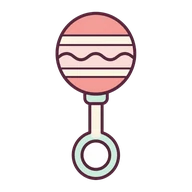
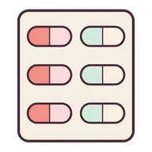
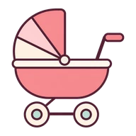
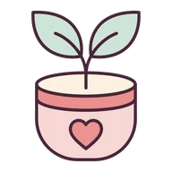
06 · Icon creation recipe
Every icon was generated with Canva AI and finished the same way. Follow this recipe so a new icon is indistinguishable from the existing twenty.
| Step | Tool | Output |
|---|---|---|
| 1 Generate (square 1:1) | Canva AI image generator | Clay render on white |
| 2 Remove background | Canva background remover | Transparent image |
| 3 Place full-size | Canva asset sheet "Tara app illustrations", 512 × 512 page | One page per icon |
| 4 Export | PNG, transparent background, 512 px | Full-resolution master |
| 5 Finish | Trim transparent margins, pad 8 % on each side, square | Even optical size |
| 6 Ship | WebP q88: icons 192 px (5–10 KB) · art 400–480 px (12–27 KB) | assets/images/icons/<name>.webp |
| 7 Register | APP_ICONS in src/components/system/app-icon.tsx | <AppIcon name="…" /> |
Lowercase single words describing the meaning: checklist, kicks, clinic. Art uses w<week>-<fruit> for size art and baby-<stage> for baby art.
07 · Illustration and imagery
The same clay world as the icons, a little larger and more emotional. Two families: the baby, who speaks to the mother, and the size fruit, which makes growth concrete.
Always on a cream cloud, inside a Rose tint disc (#FDF0F5). The baby speaks in first person ("Amma, this is me at week 30!").
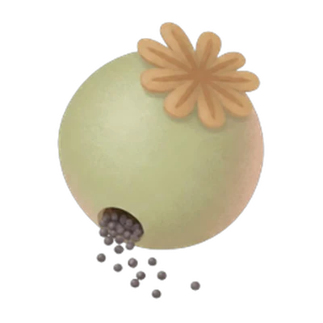
4 · poppy seed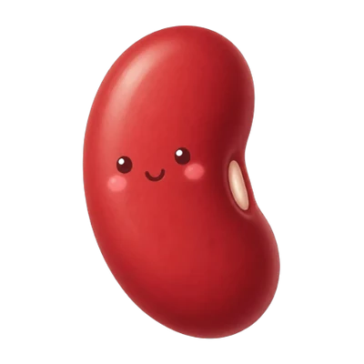
8 · rajma bean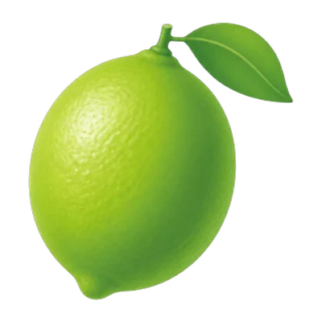
12 · lime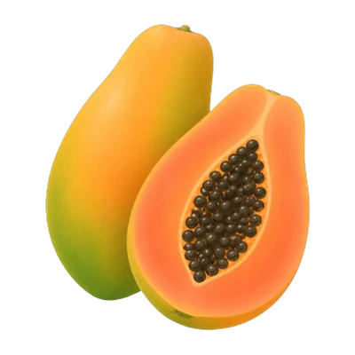
36 · papaya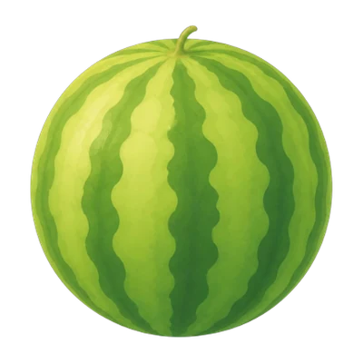
40 · watermelonAvoid the words "pregnancy", "foetus", "womb" and "born" in prompts (they trigger safety filters and medical-looking results). Keep babies cute and toy-like, never anatomical.
08 · Layout and components
Side gutter (32 on tablets)
Max column (720 on tablets ≥ 768)
Gap between sections
Primary button height / min touch
| Radius | Used for |
|---|---|
| 14–16 pt | Small wells, chips, date tiles, buttons inside cards |
| 18 pt | Grid tiles, list rows, topic cards |
| 20–24 pt | Main cards, story banner, bottom sheets (top corners), speech bubbles |
| 28 pt (pill) | Primary 56 pt button, pills, capsules |
Separation by whitespace and 1 px hairlines (#E5D8D0 or ink at 10 %). Shadows are rare and very soft (ink, 4 % opacity, 12 pt blur).
Primary: Cherry, white 600 text, 56 pt, full width, sticky at the bottom. One per screen.
Secondary: White with a 1.5 pt Cherry outline.
History card: a fixed date tile anchors every record; no icons, no readings. Medical values live in the PDF.
Weekly grid: strictly 2 × 2 equal tiles (164 pt high), identical anatomy, text never resizes a tile. Tap opens a bottom sheet.
09 · Motion and haptics
Botanical: things grow and settle like a leaf. Springs overshoot a few percent and come to rest; nothing snaps, flashes or bounces hard.
| Token | Value | Used for |
|---|---|---|
| Tactile spring | stiffness 300 · damping 25 · mass 0.8 | Button press, entrances, toggles |
| Glide spring | stiffness 280 · damping 28 | Page and tab slides, the baby's arrival |
| Leaf spring | stiffness 140 · damping 15 | Brand intro: the leaf travels into the logo |
| Settle curve | cubic-bezier(0.22, 1, 0.36, 1) | Fades and reveals |
| Breathe curve | ease-in-out sine, 3000 ms | Idle loops (scale 1 ↔ 1.03, y 0 ↔ −4 pt) |
| Press | scale 0.97 (tiles 0.96) | Every tappable surface |
| Stagger | 60 ms per item, y 24 → 0 | Lists and grids entering |
| Sheet | y 100 % → 0, background scale 0.96 | Bottom sheets and pickers |
The leaf breathes as a pre-loader, pops, travels into the wordmark; letters t-a-r-a rise in 70 ms steps; the figure draws upward; a bloom wipe reveals Welcome.
The week's baby glides in from the right, the halo ripples once, the speech bubble pops, the size fruit springs in. Swipe or Next; then fade to the dashboard.
Fruit glides between weeks; the quote rewrites word by word with a light shimmer. Future weeks stay locked.
A fully ticked day releases a 10-particle burst (720 ms, one value drives all) and "All done for today".
09 · Motion and haptics
Every primary gesture is paired with a haptic, and every animation is built to stay smooth on a low-cost Android phone.
| Strength | When |
|---|---|
| Light / select | Toggles, ticks, tab switch, week step, chips |
| Medium | Primary buttons, "Next", opening a call or a session |
| Success | Saving, finishing the intro, completing the day |
| Warning | Validation errors (ASHA/doctor flows only, never to alarm a mother) |
10 · Voice and tone
Like a kind, well-informed elder sister: short sentences, everyday words, one action at a time. Kannada, Hindi and English carry the same warmth.
Warm, personal, reassuring. "Amma", her name, her baby in first person. Never risk scores, never "danger", never readings out of context.
Practical and direct. What to do, for whom, by when. Risk is named clearly so she can act.
Clinical and precise. Rule codes, values, thresholds, transcripts.
| Instead of | tara says |
|---|---|
| ⚠️ CLINIC VISIT NEEDED TODAY: danger signs found. | Next visit · Today, 14:00 · Hosahalli PHC · with Sunita |
| Referral | Doctor visit |
| Your baby can tell light from dark. | Amma, I can tell light from dark! (the baby speaking) |
| Fetal weight estimate: 1.6 kg. | I'm about the size of a brinjal, ~1.6 kg. |
| Error: record not found. | We couldn't load your details. Your records are safe. Tap below to load them again. |
| Task completed successfully. | All done for today · 4-day streak |
11 · Brand in use
Every rule in one place: porcelain canvas, one cherry action, clay icons in tinted wells, Anek type, calm words.
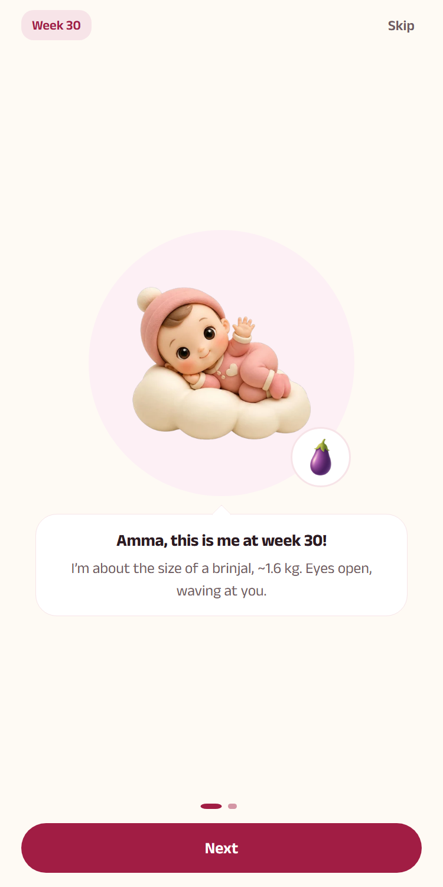
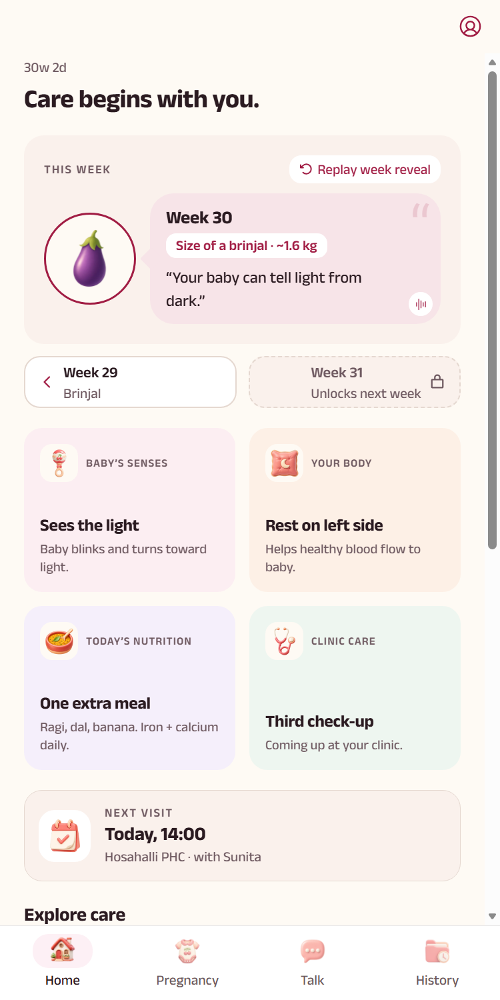
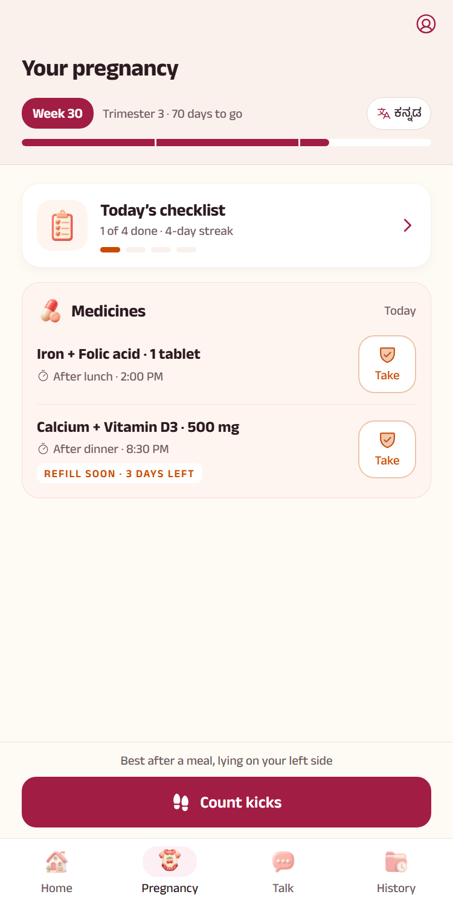
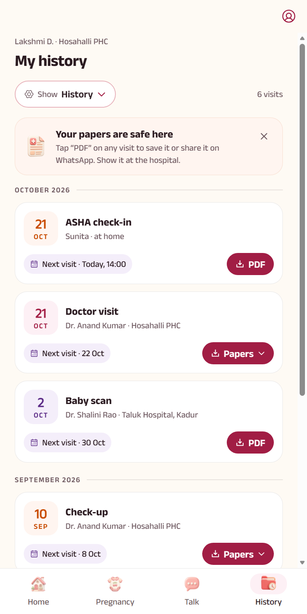
Porcelain everywhere; tints only to group; cherry only on the next action.
Clay icons and a clay baby instead of medical symbols.
Her name, her baby's voice, her ASHA's name, never alarm.
12 · Quick reference
| porcelain | #FEFAF4 | cherry | #A11D44 |
| shell | #FBF4F1 | cherryPressed | #861636 |
| cherryMist | #F7E4E8 | rose | #A9636D |
| surface | #FFFFFF | blush | #E8B4BC |
| band | #FAF1EC | pumpkin | #C84B00 |
| bandLine | #E5D8D0 | plum | #5B2A86 |
| ink | #2B1B21 | sage | #2F6B4F |
| inkMuted | #6F5A61 | outline | #9A858C |
| Display | 32/40 700 | Body | 17/25 400 |
| Title | 26/34 700 | Label | 15/22 600 |
| Heading | 19/26 700 | Caption | 14/20 500 |
| Button | 18/24 600 | Overline | 12/16 600 |
| Metric | 28/34 700 | Tagline | Parisienne 30 |
Anek Latin / Kannada / Devanagari · Parisienne (decorative)
Gutter 24 · column 520 · gaps 16–20 · button 56 · touch 44 · radius 16 / 18 / 20–24 / pill
Tactile 300/25/0.8 · Glide 280/28 · press 0.97 · stagger 60 ms · breathe 3 s · transform + opacity only
| Colours | src/constants/brand.ts |
| Type | src/constants/typography.ts |
| Motion | src/constants/motion.ts |
| Layout | src/constants/theme.ts |
| Icons | src/components/system/app-icon.tsx |
| Art | assets/images/art, icons |
| Logo | assets/images/tara-logo.png |